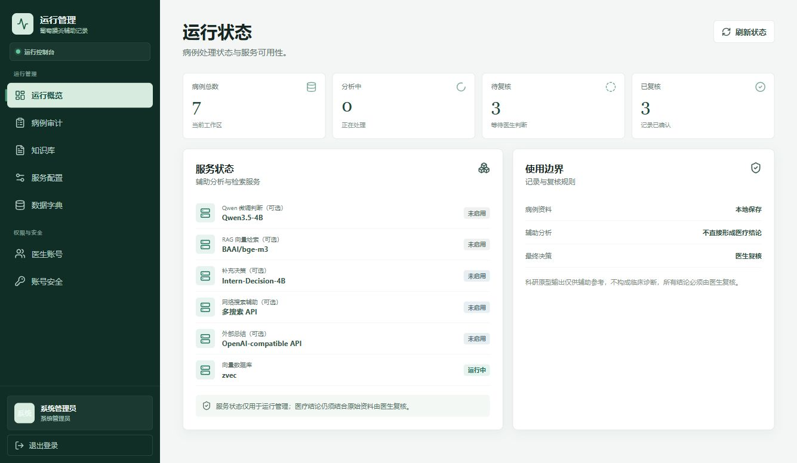

病例是系统的核心敏感数据。权限判断必须在后端完成，不能依赖前端隐藏菜单或链接。
访问规则
| 角色 | 列表 | 详情与影像 | 创建、分析、复核 |
|---|---|---|---|
| 医生 | 仅返回 f_owner_id 等于当前账号的病例。 | 仅允许本人病例；其他病例统一返回 404，不泄露是否存在。 | 仅允许操作本人病例。 |
| 管理员 | 可跨医生查看全部病例，用于审计。 | 可只读查看病例与处理状态。 | 禁止创建、分析和复核临床病例。 |
接口契约
GET /api/v1/cases 返回分页对象，不再返回无总数的数组。
{
"items": [CaseRead],
"total": 6,
"page": 1,
"page_size": 8
}| 参数 | 说明 |
|---|---|
page | 从 1 开始，当前页码。 |
page_size | 每页 1 至 100 条，前端使用 8、16、32。 |
status | 待分析、分析中、待复核、已复核或分析失败。 |
from、to | 按更新时间筛选，格式为 YYYY-MM-DD；结束日期包含当天。 |
数据迁移
- 新建或升级数据库时，为病例表增加
f_owner_id字段和索引。 - 历史病例没有可靠归属时保留空归属，不被自动分配给任何医生。
- 管理员仍可审计旧病例；如需交给医生继续处理，必须由后续明确的数据迁移流程人工确认归属。
- 读取旧 JSON 快照时以数据库归属列为准，避免旧快照缺少字段导致解码失败。
验证记录
- 覆盖医生甲创建病例、医生乙列表为空且详情/分析/复核均返回 404。
- 覆盖管理员跨医生审计病例，并拒绝管理员创建临床病例。
- 覆盖分页总数、页大小、状态筛选和非法日期参数。
- 在真实 PostgreSQL 上验证管理员读取历史病例、服务端分页和历史归属为未分配。
- 工作台待复核列表、医生病例列表和管理员病例审计均由后端执行分页；医生病例与管理员审计支持状态和更新时间范围筛选，筛选条件同步到 URL，刷新和分享链接后可以恢复。
- 浏览器回归验证管理员待复核筛选为 3 例，增加
2026-10-27单日范围后收敛为 1 例，URL 为?status=awaiting_review&from=2026-10-27&to=2026-10-27；重置后恢复全部 7 例，控制台无错误或警告。 - 管理员概览的服务状态与使用边界两张卡片在桌面端等高等宽，右侧说明贴近卡片底部；正文和操作区在窄屏下按单列排列。

后续工作
持久化分析任务队列、租约回收和重试已完成并通过真实 Worker 冒烟，详见 持久化分析任务队列。下一阶段应在移动端复核筛选布局和大数据量页码行为，并完成真实模型上传目录、推理调用和业务回写的端到端验收。历史病例归属修复需要单独设计与审计，不能在普通启动过程中猜测分配。